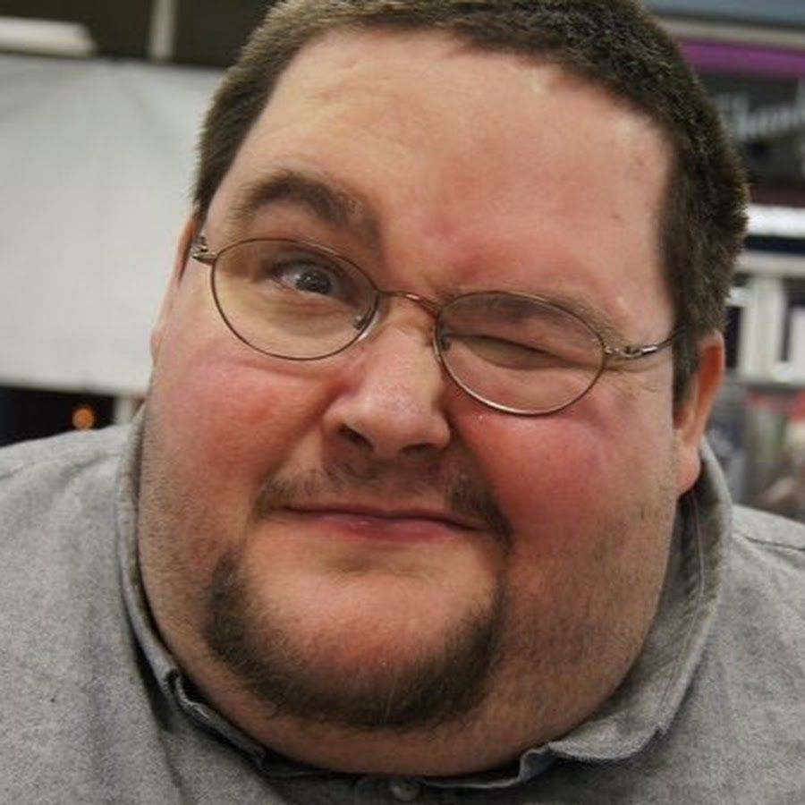
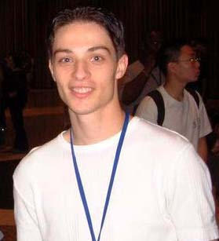
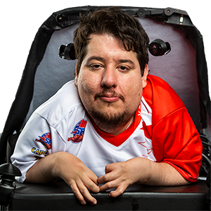
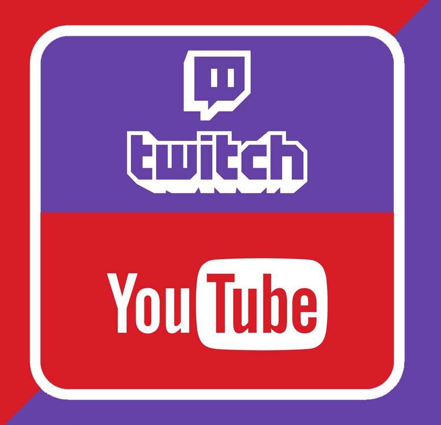
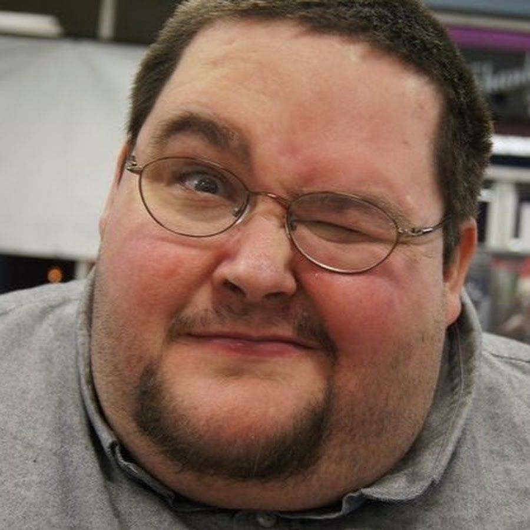
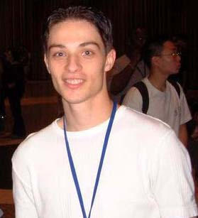
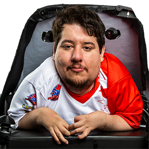
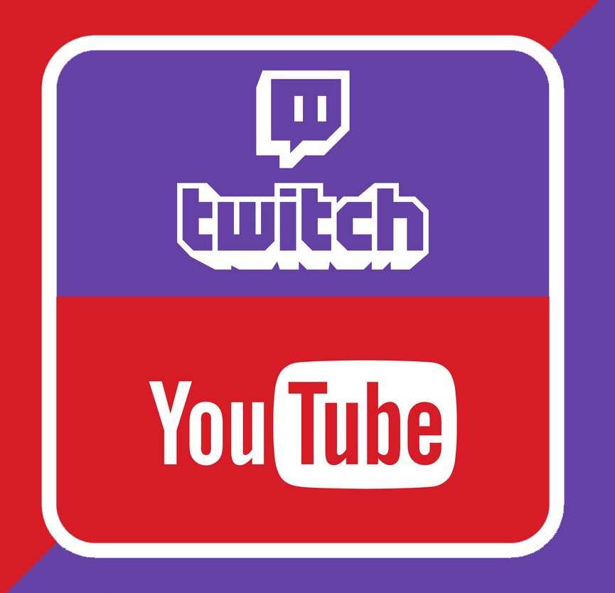

LowTierGod attacks Boogie in this video mainly over his weight and the fact that LTG is disgusted by it. The video is literally LTG hurling personal attacks at boogie for almost two minutes straight, when he really didn’t deserve it. Boggie has fallen out of favor in recent years but at the time he was loved by the YouTube community. This video is important because it was his first burst onto the eye of the youtube sphere, many people came out in support of boogie but ultimately gave LTG a bigger platform People lashed out and disliked bombed the video, causing LTG to gain a troll community. Soon after he would feed the fire as for some time he had been making fighting gaming content on YouTube of himself being very toxic to people he played against online.
LTG played against Viscant 26 times, ending in a loosing score of 20-6 in Street Fighter. LowTierGod after loosing consonantly harasses Viscant with messages on twitter and using him as an example of what an “unkempt” gamer looked like. This beef is settled with a grudge match streamed live, which was cataloged by a small YouTuber. This video is most people’s introduction into who LTG was, a toxic, rager, who needed to be put back in his place. This video is truly a classic, it gained LTG more notoriety, despite loosing the match, and it also grew his troll community grew. This is the point in his history where he hit the Dark Side Phil cycle. With out getting too much into who that is (because we will another time), it is basically someone who has surrounded themselves with a toxic community. The community will attack the creator and creator will lash back at the community.
Definitely his most controversial actions were his attacks against BrolyLegs, who suffers from arthrogryposis, a muscle condition that limits his growth. After he beat LTG online, LTG took to twitter and YouTube and attacked him with insults based on how he looked and had to play the game. To play he had to use his mouth on one the controller sticks, something LTG viciously attacked. LTG held nothing back with his insults, this was truly when he lost most respect and was hated by the online community. Brolylegs is very respected withing the community for how good he has become despite his physical ailments, at the time he was the best Chun Lee player in the world. To most other players BrolyLegs is an inspiration, someone who accomplished so much with the hand he was dealt, LTG didn’t see it that way. He just saw him as another scrub who beat him and needed to be attacked for what ever rational he could muster in his own echo chamber of a mind.
There is a large community of people dedicated to watching LTG rage and make a fool of himself. It's obvious why many people would dislike him, he puts himself above the rest and that is a simple fact. The meaning of his names is also a very telling sign of his narcissism. What a low tier god would be is a person who uses characters in a game who are considered to be the worst of the worst but is still a very good player, despite the setback of an objectively worse character. Basically he views himself so good at anything he plays he must restrict himself by playing the bottom of the barrel so people even have a chance at beating him.